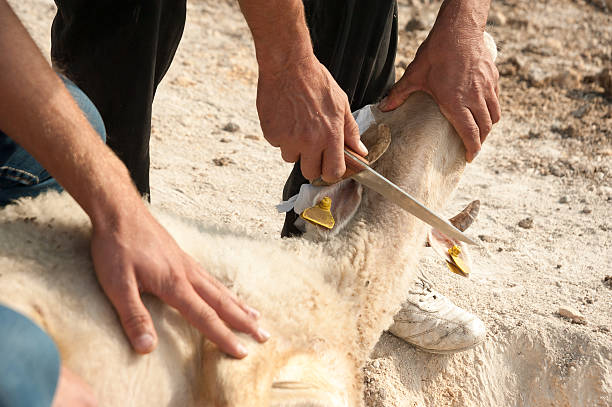

Peluang dan Keunggulan Peternakan Domba di Indonesia

Peternakan domba merupakan salah satu sektor agribisnis yang memiliki potensi besar di Indonesia. Selain permintaan pasar yang terus meningkat, domba juga dikenal sebagai hewan ternak yang relatif mudah dipelihara dan memiliki nilai ekonomis tinggi, baik dari segi daging, kulit, maupun kotorannya yang dapat dijadikan pupuk organik.
Mengapa Memilih Beternak Domba?
Beternak domba menjadi pilihan yang tepat bagi pemula maupun pelaku usaha yang ingin mengembangkan bisnis di bidang peternakan. Beberapa alasan utamanya antara lain:
-
Perawatan relatif mudah
Domba tidak membutuhkan perawatan yang terlalu rumit dibandingkan ternak lain seperti sapi.
-
Cepat berkembang biak
Dalam kondisi optimal, domba dapat berkembang biak dengan baik sehingga populasi ternak dapat meningkat dalam waktu singkat.
-
Pakan mudah didapat
Domba dapat mengonsumsi berbagai jenis rumput dan limbah pertanian, sehingga biaya pakan bisa ditekan.
-
Permintaan pasar stabil
Kebutuhan daging domba meningkat terutama saat momen keagamaan seperti Idul Adha dan acara aqiqah.
Sistem Pemeliharaan Domba
Dalam peternakan modern, terdapat beberapa sistem pemeliharaan yang umum digunakan:
-
Sistem intensif
Domba dipelihara dalam kandang dan seluruh kebutuhan pakan disediakan oleh peternak.
-
Sistem semi-intensif
Domba digembalakan pada waktu tertentu dan sisanya dikandangkan.
-
Sistem ekstensif
Domba dilepas di padang penggembalaan secara bebas.
Pemilihan sistem ini tergantung pada luas lahan, modal, dan tujuan usaha peternakan.
Manfaat Produk Peternakan Domba
Peternakan domba tidak hanya menghasilkan daging, tetapi juga berbagai produk bernilai tambah:
- Daging domba segar untuk konsumsi harian, aqiqah, dan qurban
- Kulit domba yang dapat diolah menjadi kerajinan atau produk industri
- Kotoran domba sebagai pupuk organik berkualitas tinggi
Dengan pengelolaan yang baik, semua hasil tersebut dapat meningkatkan keuntungan peternak.
Tips Sukses Beternak Domba
Agar usaha peternakan domba berjalan sukses, berikut beberapa tips yang dapat diterapkan:
- Pilih bibit domba yang sehat dan unggul
- Jaga kebersihan kandang secara rutin
- Berikan pakan yang cukup dan berkualitas
- Lakukan pemeriksaan kesehatan secara berkala
- Kelola pemasaran dengan strategi yang tepat
Penutup
Peternakan domba adalah peluang usaha yang menjanjikan dengan risiko yang relatif rendah jika dikelola dengan baik. Dengan meningkatnya kebutuhan pasar serta dukungan teknologi peternakan modern, usaha ini dapat menjadi sumber penghasilan yang stabil dan berkelanjutan.